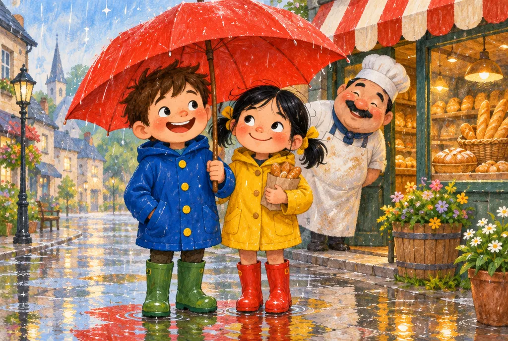

① 읽고 듣기
문장을 누르면 원어민 목소리로 읽어 줍니다. 다음 단계에서는 문장을 «골라» 칠합니다.
말 속도

문장을 누르면 원어민 목소리로 읽어 줍니다. 다음 단계에서는 문장을 «골라» 칠합니다.
이 이야기에서 가장 중요한 문장 2개를 위 본문에서 눌러 고르세요. 하나는 «문제», 하나는 «해결» 입니다.
먼저 누가·무슨 문제·어떻게 해결했는지 보고, 빈칸에 알맞은 단어를 고르세요.
🔊 를 눌러 발음을 듣고 예문을 따라 읽은 뒤, 아래 «뜻 맞히기 게임» 을 끝까지 풀어 보세요.
답을 고른 뒤, 그 답을 뒷받침하는 본문 문장도 고르세요. 답과 근거가 둘 다 맞아야 정답입니다.
Lily 의 말을 틀로 삼아, 빈칸 두 곳을 내 생활로 바꿔 영어로 써 보세요.
“Let’s take it to him before the rain gets heavy.”
Let’s 무엇을 할지 before 무슨 일이 생기기 전.
①~⑥ 도장 6개를 다 모으면 포인트를 받아요 (하루 2번까지).
다음 이야기는 어떻게 시작하면 좋을까요? 재미로 하는 투표예요 (도장·포인트와는 상관없어요).
원장님 의견 반영: 심화반은 «다음 장면 상상» 대신 «근거 찾기»(원인·결과, 문맥상 의미, 단서 연결)와 «내 이야기로 바꿔 쓰기» 로 공부합니다. 그림은 표지 포함 3장으로 줄이고 글 중심으로 읽습니다. 다음 편 투표는 보너스로 남겼습니다.
이 이야기는 망고아이가 새로 쓴 오리지널입니다. 다른 교재·동화책의 문장, 캐릭터, 그림은 쓰지 않았습니다. 삽화는 Higgsfield AI 로 이 이야기를 위해 새로 그렸습니다.